lecture 10
常用统计检验均是线性模型
Hu Chuan-Peng
2023-11-14
本次课内容
线性模型回顾
t 检验是线性模型的特殊形式(自变量为二分变量）
方差分析作为线性模型的特殊形式
Part 1: 线性模型回顾
第五课：线性模型简介
第六课：简单线性模型
第七课：多元线性模型
第八课：线性模型中的虚拟变量与广义线性模型
第九课：分层线性模型
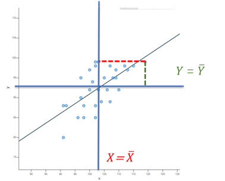
线性模型的三种视角
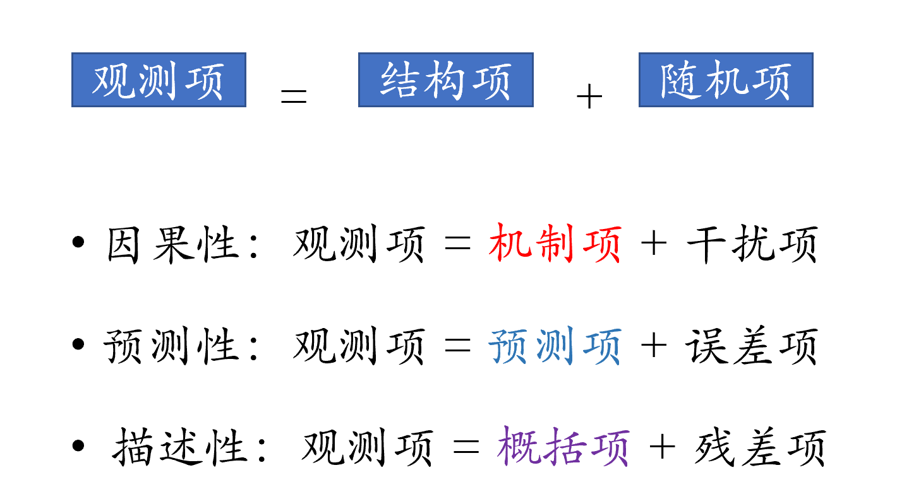简单线性回归
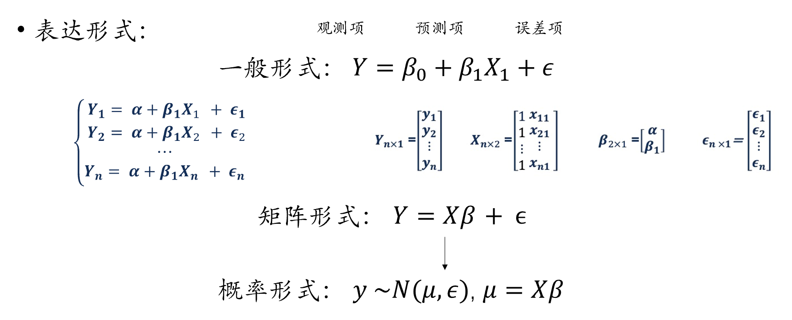多元线性回归
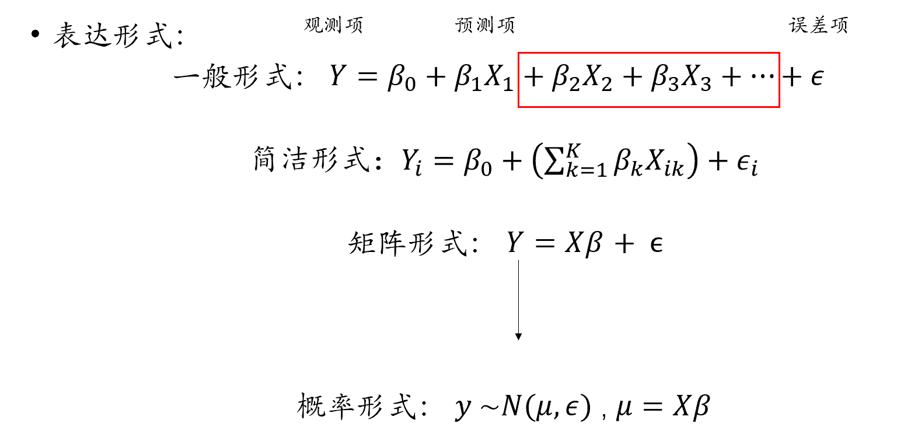当自变量为离散变量时
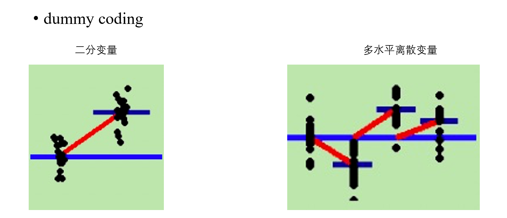https://lindeloev.github.io/tests-as-linear/
广义线性模型
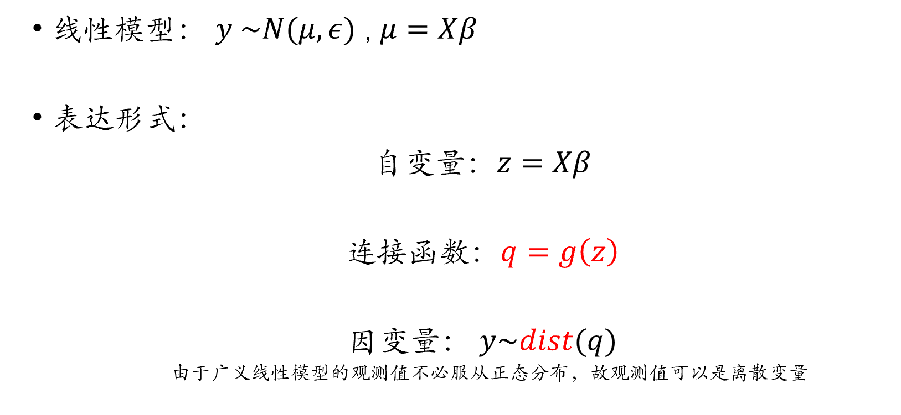Logit 回归

The math behind Logistic Regression | by Khushwant Rai | Analytics Vidhya | Medium
- 简单线性回归是多元线性回归只有一个自变量的特殊形式
- 多元线性回归是广义线性模型的一种特殊形式，连接函数为预测值本身，观测值服从以预测项为均值的正态分布，观测值与预测值之间的差值就是残差。
分层线性模型(Hierarchical linear models)
- 多水平模型（Multilevel Model，MLM）、线性混合模型（Linear Mixed Model）、混合效应模型（Mixed Effects Model）、随机效应模型（Random Effects Model）…
部分混合（Partial pooling）
组水平（groups）与整体（population）的参数相互制约
有三种可能的模型：
变化截距、固定斜率（M1）
固定截距、变化斜率（M2）
变化截距、变化斜率（M3）
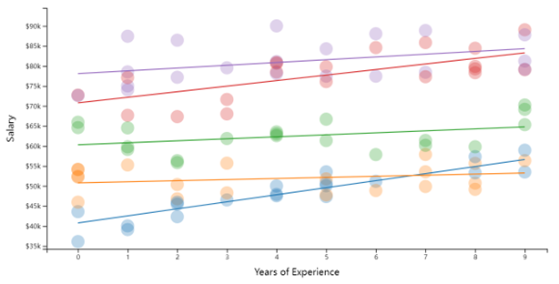
补充材料：hierarchical-models
当因变量为分类变量时，我们就需要使用广义线性混合模型(GLMM, generalized linear mixed models)。
当数据结构为同一层级时，简单线性模型，多元线性模型，广义线性模型均为广义线性混合模型的一种特殊形式。
| 简单线性模型 | 多元线性模型 | 广义线性模型 | 分层线性模型 | 广义线性混合模型 | |
|---|---|---|---|---|---|
| 自变量 | 一个 | 多个 | 一个或多个 | 一个或多个 | 一个或多个 |
| 因变量 | 连续变量 | 连续变量 | 连续/分类变量 | 连续变量 | 连续/分类变量 |
| 数据层级 | 一层 | 一层 | 一层 | 多层 | 多层 |
| 分布形态 | 正态分布 | 正态分布 | 多种分布 | 正态分布 | 多种分布 |
| 连接函数 | g(z)=z | g(z)=z | g(z)=q | g(z)=z | g(z)=q |
| 传统的检验(R代码) | 线性模型(R代码) | |
|---|---|---|
| 相关 | cor.test(x,y,method=‘Pearson’) cor.test(x,y,method=‘Spearman’) |
lm(y~1+x) lm(rank(y)~1+rak(x)) |
| 单样本t检验 | t.test(y) | lm(y~1) |
| 独立样本t检验 | t.test(y1,y2,var.equal=True) | lm(y~ 1+G2)A |
| 配对样本t检验 | t.test(y1,y2,paired=True) | lmer(y~x+(1|subject)) lm(y_1-y_2~1) |
| 单因素方差分析 | aov(y~group) | lm(y~ 1+G2+G3+…)A |
| 两因素方差分析 | aov(y~group+sex) | lm(y~ 1+G2+G3+…+S2+S3+…+G2*S2+…) |
回归与相关分析
- 皮尔逊相关系数
\(r=\frac{\sum{(x-\bar{x})(y-\bar{y})}}{nS_xS_y}=\frac{\sum{Z_xZ_y}}{N}\longrightarrow \widehat{Z_y}=rZ_x\)
- 相关系数可以表示变量间的共同变化的关系，可以使用一个变量的z分数和相关系数来预测另一个变量的z分数。
相关系数 = 标准化后的回归系数。
相关分析的统计检验
\[t=\left | r \right | \sqrt{\frac{n-2}{1-r^2}} \]
- 相关分析的统计检验是根据相关系数和转换的t分数在t分布中的位置来决定的。
Part 2:
t 检验是线性模型的特殊形式
(自变量为二分变量）
t检验
- 独立样本t检验
- 两样本之间的差异呈正态分布
- 不同样本间方差齐性
- 配对样本t检验
- 两样本之间的差异呈正态分布
- 不同样本间的值存在相关关系，不同样本来自同一个体或配对个体
独立样本t检验
- 研究问题：
- \(𝜇_𝐴=𝜇_𝐵\)
- \(𝜇_𝐴>𝜇_𝐵\)
- \(𝜇_𝐴<𝜇_𝐵\)
- 虚无假设：
- \(𝜇_𝐴=𝜇_𝐵\)
- 独立样本t检验是根据两样本差值转换的t分数在t分布中的位置来决定的。
- \(t=\frac{\bar{X_1}-\bar{X_2}}{\sqrt{\frac{n_1S_1^2+n_2S_2^2}{n_1+n_2-2}(\frac{n_1+n_2}{n_1n_2})}}\)
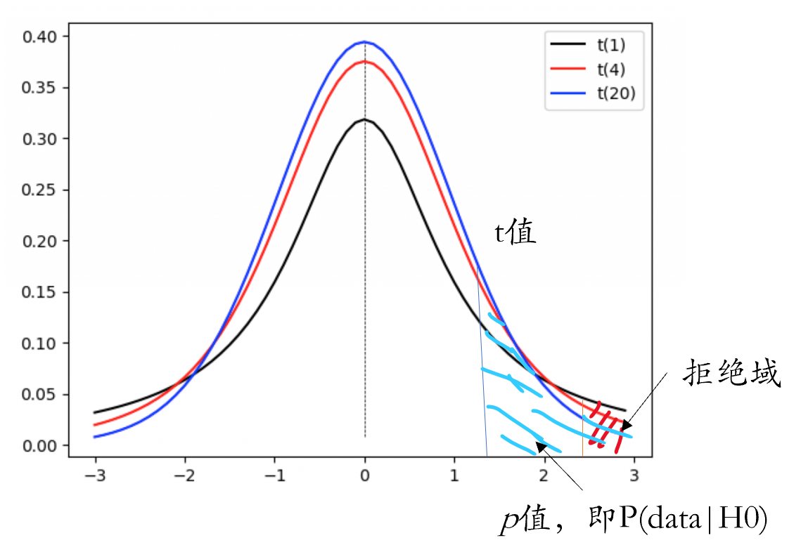
- 线性模型表达
\(Y=\beta_0+\beta_1X_1\)
其中，\(𝑋_1\)为二分变量，组1、组2分别编码为0、1；
当\(𝑋_1\)为0时，\(Y=\beta_0\)，代表组1的均值；
当\(𝑋_1\)为1时，\(Y=\beta_0+\beta_1\)，代表组2的均值；
\(\beta_1\)代表组2与组1的均值差异
- 线性模型表达：
\[Y=b_0+b_1X_1\]
\[H_0:b_1 = 0\]
- 与独立样本t检验不同，在线性模型中检查两组之间的差异相当于检查回归系数\(b_1\)的显著性。
R 独立样本t检验
利用独立样本t检验检验stroop范式下congruent组与incongruent组间是否存在反应时差异。
数据：example10_1.csv
读取数据
subject condition rt_sd rt_mean group
1 s007 congruent 205.6915 967.5227 1
2 s007 incongruent 195.3517 1019.2051 1
3 s014 congruent 172.4687 648.1064 1
4 s014 incongruent 158.9408 791.6522 1
5 s028 congruent 102.3237 606.8958 1
6 s028 incongruent 128.5749 654.1042 1
Independent-Samples t-test
Hypothesis: two-sided (μ2 - μ1 ≠ 0)
Descriptives:
──────────────────────────────────────────────────
Variable Factor Level N Mean (S.D.)
──────────────────────────────────────────────────
rt_mean condition congruent 30 679.06 (137.14)
rt_mean condition incongruent 30 795.41 (148.16)
──────────────────────────────────────────────────
Levene’s test for homogeneity of variance:
──────────────────────────────────────────────────────────────────────────
Levene’s F df1 df2 p
──────────────────────────────────────────────────────────────────────────
rt_mean: condition (incongruent - congruent) 0.64 1 58 .426
──────────────────────────────────────────────────────────────────────────
Note: H0 = equal variance (homoscedasticity).
If significant (violation of the assumption),
then you should better set `var.equal=FALSE`.
Results of t-test:
──────────────────────────────────────────────────────────────────────────────────────────────────────────────────
t df p Difference [95% CI] Cohen’s d [95% CI] BF10
──────────────────────────────────────────────────────────────────────────────────────────────────────────────────
rt_mean: condition (incongruent - congruent) 3.16 58 .003 ** 116.35 [42.57, 190.14] 0.82 [0.30, 1.33] 1.43e+01
──────────────────────────────────────────────────────────────────────────────────────────────────────────────────R 线性回归
- 线性回归模型同样可以对两组独立样本的Stroop试验结果进行显著性检验。
Call:
lm(formula = rt_mean ~ condition, data = df.it)
Residuals:
Min 1Q Median 3Q Max
-214.87 -89.85 -35.46 42.02 511.13
Coefficients:
Estimate Std. Error t value Pr(>|t|)
(Intercept) 679.06 26.06 26.053 < 2e-16 ***
conditionincongruent 116.35 36.86 3.157 0.00253 **
---
Signif. codes: 0 '***' 0.001 '**' 0.01 '*' 0.05 '.' 0.1 ' ' 1
Residual standard error: 142.8 on 58 degrees of freedom
Multiple R-squared: 0.1466, Adjusted R-squared: 0.1319
F-statistic: 9.964 on 1 and 58 DF, p-value: 0.002532结果比较
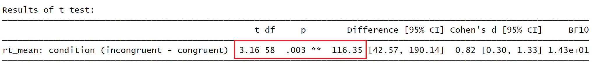
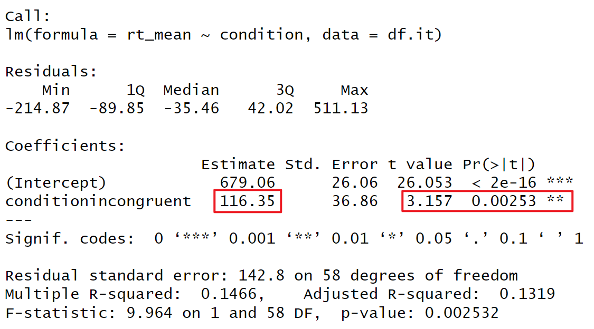
配对样本t检验
虚无假设：
- \(𝜇_𝐴=𝜇_𝐵\)
- \(\sigma_{D\bar{X}}=\sqrt{\frac{\sigma_1^2}{\sqrt{n}^2}-2r\frac{\sigma_1}{\sqrt{n}}\frac{\sigma_2}{\sqrt{n}}+\frac{\sigma_2^2}{\sqrt{n}^2}}\)
- \(t=\frac{\bar{X_1}-\bar{X_2}}{\sigma_{D\bar{X}}}\)
- 配对样本t检验也是根据两样本差值转换的t分数在t分布中的位置来决定的。
- 线性模型表达(分层线性模型，固定斜率，变化斜率)：
\(Population level: Y = \beta_{0,j}+\beta_1X_1\)
\(Group level: \beta_{0,j}\sim N(\mu\beta_0,\sigma\beta_0)\)
其中，\(𝑋_1\)为二分变量，条件1/条件2分别编码为0/1
当\(𝑋_1\)为0时，\(Y=\beta_0\)，代表条件1的均值
当\(𝑋_1\)为1时，\(Y=\beta_0+\beta_1\)，代表条件2的均值
\(\beta_1\)代表条件2与条件1的均值的差异
由于2个条件是在同一个体内部进行的，所以被试之间存在个体差异，各被试的截距不同。
- 线性模型表达
\[整体水平（Population level）：𝑌=\beta_{0,j}+\beta_1𝑋_1\] \[组水平（Group level）： \beta_{0,𝑗}\sim 𝑁(𝜇_{𝛽_0},𝜎_{𝛽_0} )\] \[H_0: \beta_1 = 0\]
与配对样本t检验不同，在线性模型中检查两组之间的差异相当于检查回归系数\(\beta_1\)的显著性。
需要注意的是，尽管线性模型中有变化效应存在，但我们检验的仍是固定效应(总体层面的效应)。
R 配对样本t检验
利用配对样本t检验检验stroop范式下congruent组与incongruent组间是否存在反应时差异。
数据：example10_2.csv
subject congruent incongruent
1 s007 967.5227 1019.2051
2 s014 648.1064 791.6522
3 s028 606.8958 654.1042
4 s096 718.7917 825.1277
5 s097 656.8333 759.9583
6 s125 703.7826 885.5000
Paired-Samples t-test
Hypothesis: two-sided (μ2 - μ1 ≠ 0)
Descriptives:
───────────────────────────────
Variable N Mean (S.D.)
───────────────────────────────
congruent 30 679.06 (137.14)
incongruent 30 795.41 (148.16)
───────────────────────────────
Results of t-test:
───────────────────────────────────────────────────────────────────────────────────────────────────────
t df p Difference [95% CI] Cohen’s d [95% CI] BF10
───────────────────────────────────────────────────────────────────────────────────────────────────────
Paired: (incongruent - congruent) 9.66 29 <.001 *** 116.35 [91.71, 141.00] 1.76 [1.39, 2.14] 7.04e+07
───────────────────────────────────────────────────────────────────────────────────────────────────────R 混合线性模型
在线性模型中，使用混合线性模型可以进行同样的假设检验
数据：example10_1.csv
数据预处理
# A tibble: 6 × 3
subject condition rt
<fct> <fct> <dbl>
1 s007 congruent 968.
2 s007 incongruent 1019.
3 s014 congruent 648.
4 s014 incongruent 792.
5 s028 congruent 607.
6 s028 incongruent 654.Linear mixed model fit by REML. t-tests use Satterthwaite's method [
lmerModLmerTest]
Formula: rt ~ condition + (1 | subject)
Data: df.rt.l
REML criterion at convergence: 700.6
Scaled residuals:
Min 1Q Median 3Q Max
-1.32617 -0.44508 -0.08481 0.54321 1.75116
Random effects:
Groups Name Variance Std.Dev.
subject (Intercept) 18203 134.92
Residual 2178 46.67
Number of obs: 60, groups: subject, 30
Fixed effects:
Estimate Std. Error df t value Pr(>|t|)
(Intercept) 679.06 26.06 32.26 26.053 < 2e-16 ***
conditionincongruent 116.35 12.05 29.00 9.656 1.45e-10 ***
---
Signif. codes: 0 '***' 0.001 '**' 0.01 '*' 0.05 '.' 0.1 ' ' 1
Correlation of Fixed Effects:
(Intr)
cndtnncngrn -0.231结果比较
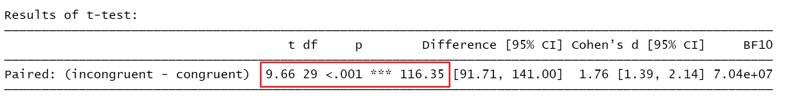
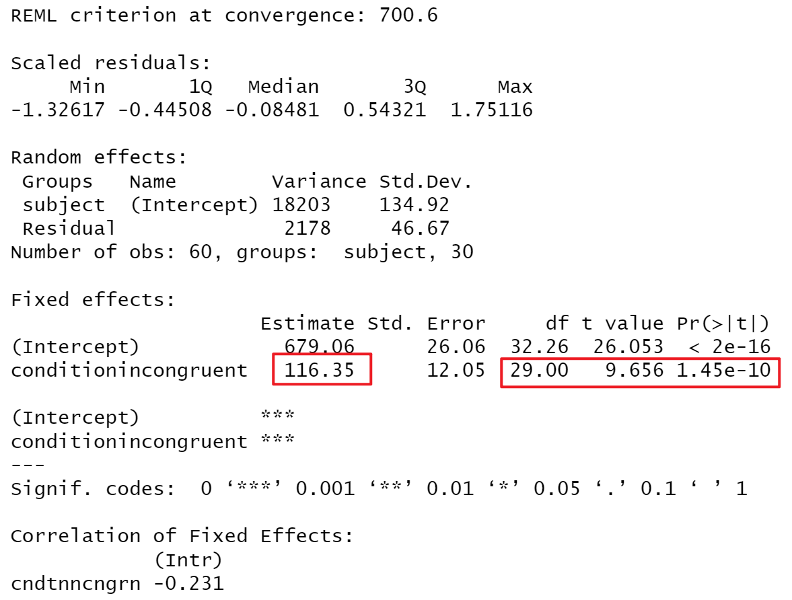
Part 3:
方差分析作为线性模型的特殊形式
方差分析
- 两因素完全随机方差分析
- 两因素重复测量方差分析
- 两因素混合设计方差分析
两因素完全随机方差分析数据模式

研究问题
- A因素的处理效应是否为0
- B因素的处理效应是否为0
- AB的交互作用是否为0
方差分析表
| 变异来源 | 平方和 | 自由度 | 均方 | F |
|---|---|---|---|---|
| 组间变异 | SS组间 | pq-1 | ||
| SSA | p-1 | \[ MS_A=\frac{SS_A}{p-1} \] | \[ \frac{MS_A}{MS_{组内}} \] | |
| SSB | q-1 | \[ MS_B=\frac{SS_B}{q-1} \] | \[ \frac{MS_B}{MS_{组内}} \] | |
| SSAB | (p-1)(q-1) | \[ MS_{AB}=\frac{SS_{AB}}{(p-1)(q-1)} \] | \[ \frac{MS_{AB}}{MS_{组内}} \] | |
| 组内变异 | SS组内 | pq(n-1) | \[ MS_{组内}=\frac{SS_{组内}}{pq(n-1)} \] | |
| 总和 | SS总变异 | npq-1 |

\[H_0: \beta1=\beta2=\beta3=\beta4=\beta5=0\]
R 两因素完全随机方差分析
数据：example10_3_w.csv
用两因素完全随机方差分析探究性别(男vs女)和情感状况(未婚vs已婚vs离婚)对反应时的影响，两自变量均为组间变量。
读取数据
worker_id Sex RelationshipStatus rt
1 s004 0 1 762.9583
2 s016 1 1 685.5495
3 s087 1 1 819.7708
4 s088 0 3 664.5417
5 s092 1 2 745.4091
6 s156 0 1 696.2841两因素完全随机方差分析
Analysis of Variance Table
Response: rt
Df Sum Sq Mean Sq F value Pr(>F)
Sex 1 3456 3455.8 0.3454 0.5622
RelationshipStatus 2 5406 2702.9 0.2701 0.7656
Sex:RelationshipStatus 2 10644 5322.0 0.5319 0.5942
Residuals 24 240122 10005.1 R 多元线性回归
Call:
lm(formula = rt ~ 1 + Sex + RelationshipStatus + Sex:RelationshipStatus,
data = df.ia)
Residuals:
Min 1Q Median 3Q Max
-153.923 -60.054 -4.164 63.223 226.601
Coefficients:
Estimate Std. Error t value Pr(>|t|)
(Intercept) 752.798 37.806 19.912 <2e-16 ***
Sex1 -7.845 58.569 -0.134 0.895
RelationshipStatus2 -46.332 69.024 -0.671 0.508
RelationshipStatus3 19.206 80.199 0.239 0.813
Sex1:RelationshipStatus2 35.517 90.524 0.392 0.698
Sex1:RelationshipStatus3 -73.924 100.501 -0.736 0.469
---
Signif. codes: 0 '***' 0.001 '**' 0.01 '*' 0.05 '.' 0.1 ' ' 1
Residual standard error: 100 on 24 degrees of freedom
Multiple R-squared: 0.07513, Adjusted R-squared: -0.1176
F-statistic: 0.3899 on 5 and 24 DF, p-value: 0.8508两因素重复测量方差分析数据模式
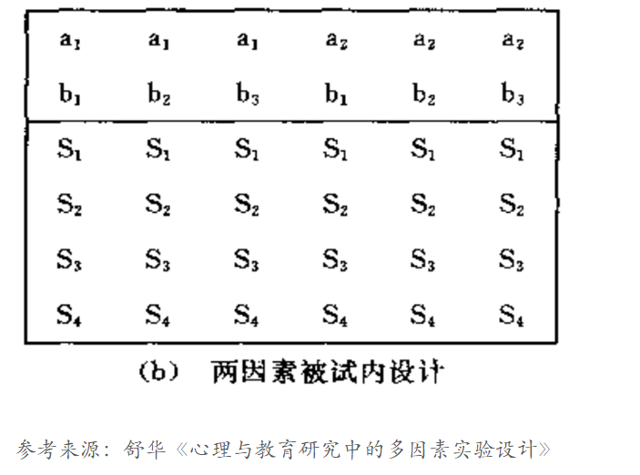方差分析表
| 变异来源 | 平方和 | 自由度 | 均方 | F |
|---|---|---|---|---|
| 被试间 | SS被试间 | n-1 | ||
| 被试内 | SS被试内 | n(pq-1) | ||
| A | SSA | p-1 | \[ MS_A=\frac{SS_A}{p-1} \] | \[ \frac{MS_A}{MS_{A*被试}} \] |
| A*被试 | SSA*被试 | (p-1)(n-1) | \[ MS_{A*被试}=\frac{SS_{A*被试}}{(p-1)(n-1)} \] | |
| B | SSB | q-1 | \[ MS_B=\frac{SS_B}{q-1} \] | \[ \frac{MS_B}{MS_{B*被试}} \] |
| B*被试 | SSB*被试 | (q-1)(n-1) | \[ MS_{B*被试}=\frac{SS_{B*被试}}{(q-1)(n-1)} \] | |
| AB | SSAB | (p-1)(q-1) | \[ MS_{AB}=\frac{SS_{AB}}{(p-1)(q-1)} \] | \[ \frac{MS_{AB}}{MS_{AB*被试}} \] |
| AB*被试 | SSAB*被试 | (p-1)(q-1)(n-1) | \[ MS_{AB*被试}=\frac{SS_{AB*被试}}{(p-1)(q-1)(n-1)} \] | |
| 总和 | SS总变异 |
R 两因素重复测量方差分析
数据：example10_4_w.csv
用两因素重复测量方差分析探究一致性 (一致vs不一致)和刺激颜色(红vs蓝vs绿)对反应时的影响，两变量均为组内变量。
数据预处理
#读取数据
df.da<-read.csv('data/example10_4_w.csv')
# 宽数据转长数据
df.da.l <- df.da %>%
pivot_longer(cols = c("congruent_blue", "congruent_green", "congruent_red",
"incongruent_blue", "incongruent_green","incongruent_red"),
names_to = c("condition", "stim_color"),
names_sep = "_",
values_to = "rt")%>%
mutate(condition=factor(condition),
stim_color=factor(stim_color))
head(df.da.l)# A tibble: 6 × 4
worker_id condition stim_color rt
<chr> <fct> <fct> <dbl>
1 s004 congruent blue 681.
2 s004 congruent green 740
3 s004 congruent red 740.
4 s004 incongruent blue 750.
5 s004 incongruent green 837.
6 s004 incongruent red 830.两因素重复测量方差分析
Type III Analysis of Variance Table with Satterthwaite's method
Sum Sq Mean Sq NumDF DenDF F value Pr(>F)
condition 310985 310985 1 29 211.7212 7.341e-15 ***
stim_color 48744 24372 2 58 16.5925 2.003e-06 ***
condition:stim_color 3459 1730 2 58 1.1776 0.3153
---
Signif. codes: 0 '***' 0.001 '**' 0.01 '*' 0.05 '.' 0.1 ' ' 1分层线性回归
- 重复测量方差分析是一种特殊的层级模型，其变化的截距不仅包括每个个体，也包括个体与每个条件的交互下的截距
Linear mixed model fit by REML. t-tests use Satterthwaite's method [
lmerModLmerTest]
Formula:
rt ~ condition * stim_color + (1 | worker_id) + (1 | worker_id:condition) +
(1 | worker_id:stim_color)
Data: df.da.l
REML criterion at convergence: 1965.3
Scaled residuals:
Min 1Q Median 3Q Max
-2.04410 -0.50092 -0.03966 0.40354 2.33417
Random effects:
Groups Name Variance Std.Dev.
worker_id:stim_color (Intercept) 923.5 30.39
worker_id:condition (Intercept) 840.6 28.99
worker_id (Intercept) 8521.3 92.31
Residual 1468.8 38.33
Number of obs: 180, groups:
worker_id:stim_color, 90; worker_id:condition, 60; worker_id, 30
Fixed effects:
Estimate Std. Error df t value
(Intercept) 684.385 19.794 43.879 34.575
conditionincongruent 141.475 12.408 68.776 11.402
stim_colorgreen -7.233 12.629 100.956 -0.573
stim_colorred -46.658 12.629 100.956 -3.695
conditionincongruent:stim_colorgreen 3.348 13.994 58.000 0.239
conditionincongruent:stim_colorred -16.698 13.994 58.000 -1.193
Pr(>|t|)
(Intercept) < 2e-16 ***
conditionincongruent < 2e-16 ***
stim_colorgreen 0.568084
stim_colorred 0.000358 ***
conditionincongruent:stim_colorgreen 0.811741
conditionincongruent:stim_colorred 0.237665
---
Signif. codes: 0 '***' 0.001 '**' 0.01 '*' 0.05 '.' 0.1 ' ' 1
Correlation of Fixed Effects:
(Intr) cndtnn stm_clrg stm_clrr cndtnncngrnt:stm_clrg
cndtnncngrn -0.313
stim_clrgrn -0.319 0.312
stim_colrrd -0.319 0.312 0.500
cndtnncngrnt:stm_clrg 0.177 -0.564 -0.554 -0.277
cndtnncngrnt:stm_clrr 0.177 -0.564 -0.277 -0.554 0.500 两因素混合设计方差分析数据模式
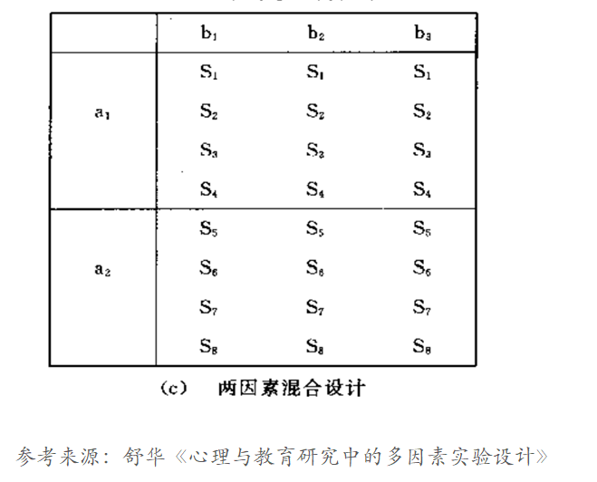方差分析表
| 变异来源 | 平方和 | 自由度 | 均方 | F |
|---|---|---|---|---|
| 被试间 | SS被试间 | np-1 | ||
| A | SSA | p-1 | \[ MS_A=\frac{SS_A}{p-1} \] | \[ \frac{MS_A}{MS_{被试(A)}} \] |
| 被试(A) | SS被试(A) | p(n-1) | \[ MS_{被试(A)}=\frac{SS_{被试(A)}}{p(n-1)} \] | |
| 被试内 | SS被试内 | np(q-1) | ||
| B | SSB | q-1 | \[ MS_B=\frac{SS_B}{q-1} \] | \[ \frac{MS_B}{MS_{B*被试(A)}} \] |
| AB | SSAB | (p-1)(q-1) | \[ MS_{AB}=\frac{SS_{AB}}{(p-1)(q-1)} \] | \[ \frac{MS_{AB}}{MS_{B*被试(A)}} \] |
| B*被试(A) | SSB*被试(A) | p(n-1)(q-1) | \[ MS_{B*被试(A)}=\frac{SS_{B*被试(A)}}{p(n-1)(q-1)} \] | |
| 总和 | SS总变异 |
R 两因素混合设计方差分析
数据：example10_5_w.csv
用两因素混合设计方差分析探究性别（男vs女）和刺激颜色(红vs蓝vs绿)对反应时的影响，其中性别为组间变量，刺激颜色为组内变量。
数据预处理
# A tibble: 6 × 4
worker_id Sex stim_color rt
<chr> <fct> <fct> <dbl>
1 s004 0 blue 715.
2 s004 0 green 789.
3 s004 0 red 785.
4 s016 1 blue 659.
5 s016 1 green 688.
6 s016 1 red 711.Type III Analysis of Variance Table with Satterthwaite's method
Sum Sq Mean Sq NumDF DenDF F value Pr(>F)
Sex 580 580.5 1 28 0.3521 0.5577
stim_color 53367 26683.3 2 56 16.1850 2.836e-06 ***
Sex:stim_color 3024 1511.8 2 56 0.9170 0.4056
---
Signif. codes: 0 '***' 0.001 '**' 0.01 '*' 0.05 '.' 0.1 ' ' 1R 分层线性回归
Linear mixed model fit by REML. t-tests use Satterthwaite's method [
lmerModLmerTest]
Formula: rt ~ Sex * stim_color + (1 | worker_id)
Data: df.ma.l
REML criterion at convergence: 955.9
Scaled residuals:
Min 1Q Median 3Q Max
-2.14781 -0.55914 -0.05631 0.61116 1.92494
Random effects:
Groups Name Variance Std.Dev.
worker_id (Intercept) 8746 93.52
Residual 1649 40.60
Number of obs: 90, groups: worker_id, 30
Fixed effects:
Estimate Std. Error df t value Pr(>|t|)
(Intercept) 774.59 29.43 34.77 26.318 < 2e-16 ***
Sex1 -37.73 38.00 34.77 -0.993 0.328
stim_colorgreen -19.77 16.58 56.00 -1.193 0.238
stim_colorred -70.33 16.58 56.00 -4.243 8.36e-05 ***
Sex1:stim_colorgreen 21.75 21.40 56.00 1.016 0.314
Sex1:stim_colorred 27.46 21.40 56.00 1.283 0.205
---
Signif. codes: 0 '***' 0.001 '**' 0.01 '*' 0.05 '.' 0.1 ' ' 1
Correlation of Fixed Effects:
(Intr) Sex1 stm_clrg stm_clrr Sx1:stm_clrg
Sex1 -0.775
stim_clrgrn -0.282 0.218
stim_colrrd -0.282 0.218 0.500
Sx1:stm_clrg 0.218 -0.282 -0.775 -0.387
Sx1:stm_clrr 0.218 -0.282 -0.387 -0.775 0.500 总结
| R中内置函数 | 一般线性表达形式 | R中的线性模型 | |
|---|---|---|---|
| 独立样本t检验 | t.test(y~group) | \[Y=\beta_0+\beta_1X_1\] | lm(y~ 1+X1) |
| 两因素完全随机方差分析 | aov(y~ X1+X2) | \[ Y=\beta_0+\beta_1X_1+\beta_2X_2+\beta_3X_3+\beta_4X_1X_2+\beta_5X_1X_3 \] | lm(y~1) |
| 配对样本t检验 | t.test(y1, y2, paired =True) | \[ Population level: Y=\beta_{0,j}+\beta_1X_1 \] \[ Subject level: \beta_{0,j}\sim N(\mu_{\beta_0},\sigma_{\beta_0}) \] |
lmer(y~ x+(1|subject)) lm(y1 -y2 ~1) |
| 两因素重复测量方差分析 | aov(y~ X1*X2+Error(n/X1)) | \[ Population level:Y=\beta_0+\beta_1X_1+\beta_2X_2+\beta_3X_3+\beta_4X_1X_2+\beta_5X_1X_3 \] \[ Subject level: \beta_{0,j}\sim N(\mu_{\beta_0},\sigma_{\beta_0}) \] |
lmer(y~ X1+X2 +(1+X1|subject)+(1+X2 |subject)) |
| 两因素混合方差分析 | aov(y~ X1+X2+X1:X2) | \[ Population level:Y=\beta_0+\beta_1X_1+\beta_2X_2+\beta_3X_3+\beta_4X_1X_2+\beta_5X_1X_3 \] \[ Group_{subject} level:\beta_{0,j}\sim N(\mu_{\beta_0},\sigma_{\beta_0}) \] \[ Group_{condition} level:\beta_{0,j}\sim N(\mu_{\beta_0},\sigma_{\beta_0}) \] |
推荐阅读
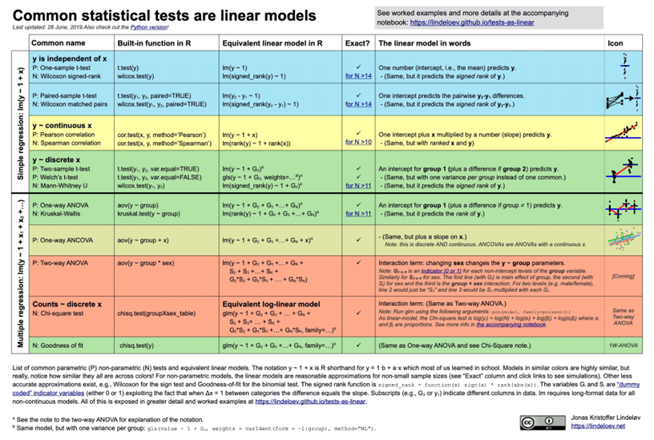
https://lindeloev.github.io/tests-as-linear/